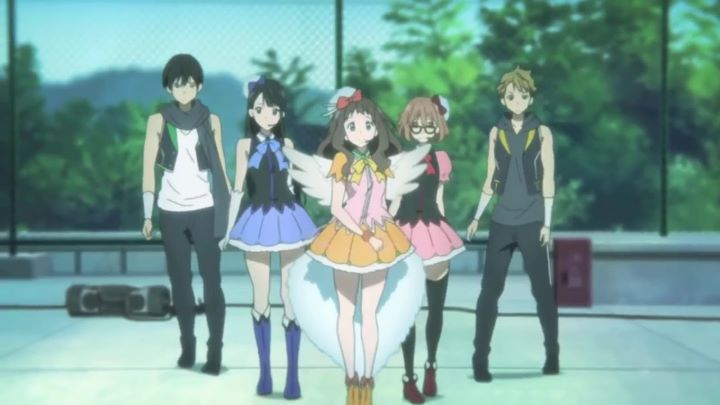

Kyoto Animation is one of the most consistentlly appreciated anime studios from the perspective of anime fans. Ever since their runaway successes with "Haruhi Suzumiya" and "Clannad," they've been able to produce television series with a certain grace and quality that, on average, exceeds any other studio. Typically side-stepping from romance to comedy to high-school slice-of-life, they always somehow make shows that just look really pretty, and even when there's a lack of detail or movement, the character designs typically look super-cute. However, I've long suspected that Kyoto Animation would want to tackle a more dramatic show, or perhaps an action-packed fantasy, to highlight their creative prowess and take advantage of amibitious scenes with a lot of animation. I suspect their fans want to see this as well: the amount of hype and advertising given to 2018's steam-punk "Violet Evergarden" is beyond almost anything else their shows have received ahead of broadcast. In 2013, they accomplished this with one example that better serves this genre than their other past works in "Beyond the Boundary." If I had to briefly describe the plot or mood of "Beyond the Boundary," I would say it was "the anime version of Harry Potter." Poser child Mirai Kuriyama vaguely looks like a cute-anime-girl version of Harry Potter, a bit clumsy in her oversized sweater, conservative hairstyle and red-rimmed glasses. Her counterpart is Akihito, a boy who catches her on the roof of their school while she appears to be committing suicde, but upon saving her he is stabbed with a sword formed from Mirai's blood. We learn that Mirai is a Spirit World Warrior, essentially making a living off of hunting supernatural monsters called "youmu," but she isn't particularly good at it and struggles to make ends meet. To my surprise while watching, Akihito is not simply a passing bystander destined to fall in love with the mysterious cutie, but he himself is a "half-youmu," already enveloped in this supernatural world despite having kept his powers under control. As such, he is immortal to simple stabs, and is not dangerous enough for Mirai to profit from pursuing, so he agrees to help her gain confidence in her role to avoid her continously using him as target practice. Most of the show lets us peak into this secret supernatural world from the eyes of both Mirai and Akihito as they learn from others in the town also part of this society.If you couldn't guess, I immediately appreciated the setup between the two main characters. Yes, Mirai is clumsy, helpless and all the more cute for it, but when she needs to, she can jump into action and hold her own against dangerous creatures. Most other shows would have made Akihito complete average, simply falling in love with the main heroine while not actually doing anything (countless action anime featuring women doing all the fighting follow this archtype), but instead Akihito shows more annoyance than affection, and doesn't feel out of place given his own history. This might not seem like a big deal, but it makes the show unique in how it respects the viewer, making the romance that eventually comes all the more powerful. The world is fascinating, opening itself and its rules organically to the viewer, and the plot twists and reveals result in a dramatic conclusion as payoff.  It isn't a perfect show however. Mirai's helplessness and strength contradict each other a little too much, for example. More significantly, the anime and its story never had the impact it should have given the fantastical subject matter. I only barely remember it as I write this review. It feels like it was more an excercise in world-building rather than strong character development or story beats. That's perfectly fine, but I think that prevents its ability to resonante with audiences after seeing it. Kyoto Animation generally did a great job with the visual style. The character designs are a bit more unique than other anime with school-settings, and the town eventually feels like a real place you could walk through. Monster designs are vicious and give off the right air of danger, and Mirai's blood-sword is a fantastic visual. Animation looks especially good during the action scenes, which this show provides moreso than what Kyoto Animation normally works with. I recall the ending animation to each episode to also be cool in an abstract way. The music is atmospheric, and the voice acting is... fine.It is a shame a greater franchise didn't come from "Beyond the Boundary" (although a feature-film sequel was released two years later). In the catelog of Kyoto Animation's works, this is probably one of the least memorable to most people, and that's a real shame, because it does a lot right.
- "Ani" More reviews can be found at : https://2danicritic.github.io/ Previous review: review_Berserk_-_The_Golden_Age_Arc_(The_Egg_of_the_King,_The_Battle_for_Doldrey,_The_Advent) Next review: review_Beyond_the_Boundary_-_I'll_Be_Here